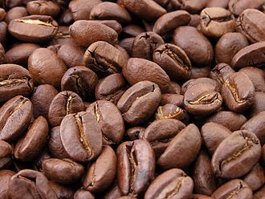
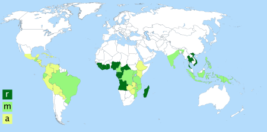

Ко́фе (от араб. قهوة[qahwa], через нидерл.
koffie, англ. coffee и устар. ко́фий, ко́фей) — напиток из
жареных и перемолотых зёрен кофейного дерева или кофейного
куста.
Виды кофейных деревьев
Насчитывается более 90 видов растений, относящихся к
роду кофе (Coffea). Но в промышленных масштабах
используются только два из них:
-
Coffea arabica L. — кофе аравийский (вид зерна —
«арабика»);
-
Coffea canephora Pierre ex A.Froehner — кофе
конголезский (вид зерна — «робуста»).
На эти два вида приходится по разным оценкам до 98 %
производимого кофе. Этот объём делится в соотношении 69
% — арабика, 29 % — робуста. На остальные виды кофе
приходится 2 % мирового производства.
С кофейного дерева собирают до 3,6 кг, макс до 5,5 кг.
Классификация зелёных зёрен (сырья)
В международной торговле используются, в основном,
зелёные кофейные зёрна. Это связано с тем, что зелёное
кофейное зерно может храниться дольше обжаренного и тем
более молотого кофе.
В отсутствие универсальной системы градации кофейных
зёрен каждая страна-производитель пользуется своей
системой определения сортности кофейного зерна, куда
обычно входят требования по:
- виду кофейных зёрен (арабика, робуста),
- региону произрастания,
- способу обработки,
- размеру,
- количеству дефектных зёрен,
- количеству посторонних примесей,
- влажности.
История
Открытие кофе относится приблизительно к 850 г. н. э., но
полное признание его пришло много веков спустя.
Первоначально в качестве тонизирующего средства употреблялся
не отвар обжаренных зёрен, а непосредственно сырые кофейные
ягоды. Чуть позже в Йемене начали готовить напиток из зрелой
высушенной мякоти кофейного плода, получая напиток — «гешир»
(он же кишр) — так называемый «белый йеменский кофе».
Лишь в XII веке из сырых кофейных зёрен стали готовить
напиток, а ещё столетия спустя начали срывать плоды с
кофейных деревьев, сушить зёрна, обжаривать и измельчать, а
получившийся порошок заливать горячей водой. Арабы добавляли
в него различные пряности — имбирь, корицу. Также смешивали
напиток с молоком.
До XIV века кофе произрастал в Эфиопии в диком виде. После
кофейное дерево было привезено на Аравийский полуостров. В
XVI веке стал широко распространяться в Османской империи. В
конце XVI века европейские торговцы начали закупать кофе в
арабских портах и привозить в Европу. Согласно легенде, в
середине XVII века мусульманский пилигрим тайно вывез
кофейные зёрна в Южную Индию. Оттуда в конце XVII века
голландские торговцы тайно вывезли кофейное дерево на Яву и
Суматру. Это послужило концом арабской монополии на
выращивание кофе.
Около 1555 года в Константинополе была открыта первая
публичная кофейня. Историки утверждают, что визирь Мехмед
Кёпрюлю однажды переоделся простолюдином и отправился по
кофейням, чтобы послушать, что говорят о власти. И, как
оказалось, не услышал ни одного доброго слова, после чего
царедворец велел закрыть все кофейни, а кофе — запретить.
В Англии кофейни долгое время считались мужскими клубами, и
в 1674 году женщины, недовольные тем, что мужей не вытащить
из кофеен, написали «Женскую петицию против кофе».
Согласно легенде, широкое распространение кофе в Европе
связано с именем купца Юрия-Франца Кульчицкого, который в
1686 году после победы Австрии в Венской битве якобы открыл
в собственном доме первую кофейню в Вене. По другим
сведениям, первую кофейню в Вене и в целом в Европе открыл в
1685 году армянин Ованес Аствацатур (известный в Европе как
Йоханес Диодато).
В 1706 году голландские колонисты прислали саженец кофейного
дерева в ботанический сад Амстердама. Через несколько лет
саженец дерева был подарен королю Франции. Французский моряк
Габриэль-Матьё де Кльё похитил черенки и семена кофейного
дерева из королевской оранжереи и привез их на о. Мартиника,
где основал первую кофейную плантацию. Растения кофе хорошо
прижились в теплом климате и плантации быстро
распространились по всей Южной Америке: в 1727 году
закладываются плантации — в Бразилии, в 1730 году — на
Ямайке (начало знаменитого сорта Blue Mountain), 1748 год —
на Кубе, 1760 — в Гватемале, 1779 — в Коста-Рике. Так кофе с
острова Гаити превысил половину всех поставок в Европу.
Тяжелые условия жизни рабов на плантациях Сан-Доминго
привели к восстанию рабов.
В России кофе оказался при царе Алексее Михайловиче и служил
средством от многих болезней, в том числе от мигрени. Однако
именно обычай пить кофе связывают с именем Петра I. Он, по
утверждениям историков, насильно поил «горьким пойлом»
приближённых. В 1703 году был открыт первый кофейный дом.
В XVIII веке европейцы завезли саженцы кофейного дерева во
многие тропические страны по всему миру. Кофе выращивается в
65 странах. Больше всего кофе производится в Бразилии (на её
долю приходится около 40 % мирового производства кофе),
Колумбии, Вьетнаме, Индонезии, Мексике, Индии и Эфиопии.
Растворимый кофе был изобретён и запатентован (патент №
3518) Дэвидом Стренгом из Новой Зеландии.
Декофеинизирование кофейных зерен было изобретено в 1903
году немцем Людвигом Розелиусом. Сделать это открытие ему
помог случай. Судно, перевозившее груз кофе, попало в
сильный шторм, и трюмы были залиты морской водой до такой
степени, что корабль с трудом оставался на плаву. Хозяин
груза думал, что всё пропало, но на всякий случай решил
отнести кофейные зерна на экспертизу. Эксперт Людвиг
Розелиус определил, что кофе в полном порядке, но потерял
почти весь кофеин. Впоследствии удачливый немец запатентовал
в США свою находку. Широкая известность к кофе без кофеина
пришла в 1930 году.
Обработка
|

|
| Обжаренные кофейные зёрна |
Обжарка
Обжарка — один из главных этапов в получении хорошего кофе. При
обжарке зелёные кофейные зёрна увеличиваются в объёме и меняют
цвет с зелёного на коричневый.
В одном килограмме жареного кофе содержится примерно 4—5 тысяч
зёрен, в зависимости от степени обжаривания кофе. Чем светлее
зерно обжарено, тем оно тяжелее. Соответственно просматривается
прямая зависимость количества зерен на килограмм от степени
обжаривания кофе.
Вкус кофе формируется благодаря многим сложным ароматическим
химическим соединениям. В зависимости от того, проявления каких
соединений хочет добиться обжарщик, подбирается оптимальный
режим обжарки.
Как правило, выделяют 4 степени обжарки. Самая лёгкая степень
обжарки обычно называется скандинавской, более тёмная — венской,
ещё темнее французская обжарка. Самая тёмная степень обжарки
называется итальянской.
В европейской кофейной традиции, как правило, кофе тёмной
обжарки используется для приготовления эспрессо, лёгкая степень
обжарки используется чаще для заваривания кофе во френч-прессе.
Измельчение
Обжаренные зёрна измельчают в кофемолке, ступке или мельнице. В
зависимости от того, каким способом будут готовить кофе, зёрна
измельчают до определённого размера частичек. Грубый помол
используют для приготовления кофе во френч-прессе, средний — для
фильтр-кофе, мелкий и самый мелкий — для кофе эспрессо и
«по-восточному» в турке (джезве).
Молотый кофе довольно быстро теряет часть вкуса и аромата,
поэтому рекомендуется молоть зёрна непосредственно перед
употреблением.
Переработка в растворимый кофе
Часть кофейного урожая идёт на производство растворимого кофе.
Выращивание и сбор урожая
|  |
|
Основные регионы выращивания кофе.
r: робуста
m: робуста и арабика
a: арабика
|
Около трети кофе потребляется в странах-производителях, в
частности в Бразилии (1,32 млн тонн), Индонезии (282 тысячи
тонн). Крупнейшими потребителями-импортёрами кофе является
Евросоюз (2,5 млн тонн, в первую очередь Германия, Италия,
Франция), США (1,57 млн тонн), Япония (465 тысяч тонн), Россия
(271 тысяча тонн), Канада (227 тысяч тонн), Республика Корея
(140 тысяч тонн), Алжир (133 тысячи тонн), Австралия (110 тысяч
тонн), Саудовская Аравия (86 тысяч тонн), Турция (83 тысячи
тонн), Украина (67 тысяч тонн).
Большое значение на рынке кофе играют реэкспортёры, страны,
закупающие сырьё у стран-производителей и перерабатывающие его
(обжарка, перемалывание, переработка в растворимый кофе,
расфасовка для розничной торговли) для последующего экспорта.
Более двух третей реэкспорта приходится на Евросоюз, в первую
очередь Германия (720 тысяч тонн), Бельгия (255 тысяч тонн),
Италия (190 тысяч тонн), Нидерланды (107 тысяч тонн), Испания
(98 тысяч тонн), Польша (97 тысяч тонн). Другие крупные
реэкспортёры: США (176 тысяч тонн), Швейцария (112 тысяч тонн),
Малайзия (94 тысячи тонн), КНР (85 тысяч тонн), Канада (75 тысяч
тонн), Россия (57 тысяч тонн).
Международный рынок кофе в 2017 году оценивался в 30,4 млрд
долл. Крупнейшими экспортерами Кофе, в суммовом выражении,
являются Бразилия ($4,86 млрд долл.), Вьетнам ($3,08 млрд
долл.), Колумбия ($2,7 млрд долл.), Германия ($2,25 млрд долл.)
и Швейцария ($1,74 млрд долл.), а импортерами — США ($6,03 млрд
долл.), Германия ($3,5 млрд долл.), Франция ($1,94 млрд долл.) и
Италия ($1,78 млрд долл.).
Сначала в рассаднике, где обеспечивается нужное количество
солнечного света и тени, сажают специально выведенные семена.
Примерно через полгода сеянцы пересаживают на поле, почва
которого подготовлена для них с помощью удобрений. Кофейные
сеянцы сажаются рядами, расстояние между которыми делается с
расчётом ухода за саженцами и землёй, а также для уборки урожая.
Плодоносят растения только при круглогодичном уходе, в который
входят прополка сорняков и регулярная обработка деревьев
фунгицидами, инсектицидами, нематоцидами с целью защитить их от
вредителей и болезней, таких, как бобовый сверлильщик, кофейная
ржавчина («ройя», вызываемая грибком Hemileia vastatrix Berk. et
Br.), Охо-де-гайо («глаз петуха», вызываемая грибком Mycena
citricolor), нематода и т. д.
Срок жизни кофейного дерева составляет 60—70 лет. Плодоносить
молодое растение начинает не раньше, чем через два года; в год с
одного кофейного дерева можно получить примерно 1-1,5 тысячи
ягод. Кофе лучше собирать вручную, снимая только спелые ягоды
одну за другой; именно так и делается в Колумбии, Коста-Рике и
других странах, когда компании специально нанимают сезонных
рабочих.
Собранные вручную ягоды обычно подвергаются обработке влажным
способом. Они помещаются в протирочную машину, которая снимает с
семян большую часть мякоти. Затем семена на один-три дня
кладутся в баки, где под действием энзимов, возникающих
естественным путём, оставшаяся мякоть разлагается в процессе
ферментации. После этого семена промывают, удаляя последние
остатки мякоти. Часть из них сушат под солнцем на бетонных
террасах или сушильных столах, а часть — пропуская через сушилки
с горячим воздухом. Вслед за этим механически удаляются
покрывающие семена слои сухой кожицы, которая состоит из
пергаментной и серебристой оболочек. Ферментация, которая
осуществляется при обработке влажным способом, наряду с
использованием только полностью созревших ягод позволяет
получать мягкий кофе отличного качества.
В Бразилии, главной стране по производству кофе, на плантациях
чаще всего применяется уборочный метод, известный как derriça.
Кофе собирают вручную, снимая с ветвей все до единой ягоды,
независимо от степени их спелости. Недавно на некоторых
плантациях для улучшения качества продукции и повышения
производительности труда стали переходить на механизированные и
полумеханизированные методы уборки. При одном из них
используется ручной пневматический инструмент, трясущий ветви, в
результате чего ягоды падают на землю.
Упавшие плоды собирают граблями и, чтобы удалить листья, грязь и
палочки, просеивают. Затем кофейные ягоды складываются в большие
60-литровые корзины. Просеянные ягоды моют в бетонном корыте или
в специально предназначенной для этого машине. Во время мойки
спелые плоды отделяются от старых сухих, которые начали гнить.
Вымытый кофе раскладывают на большой бетонной террасе для
просушивания на солнце в течение 15—20 дней. В это время, чтобы
зёрна просохли как следует, их переворачивают примерно каждые 20
минут. Иногда, чтобы они высохли скорее, используются
механические сушилки. Необходимо следить за содержанием в зёрнах
влаги, иначе они могут пересохнуть, отчего станут хрупкими и
начнут ломаться — а из-за этого снизится их ценность. Когда
достигнута идеальная влажность — между 11 и 12 процентами, —
зёрна механически очищаются от шелухи. Затем их раскладывают в
мешки и отправляют на предприятия, где его классифицируют и
подвергают дальнейшей обработке.